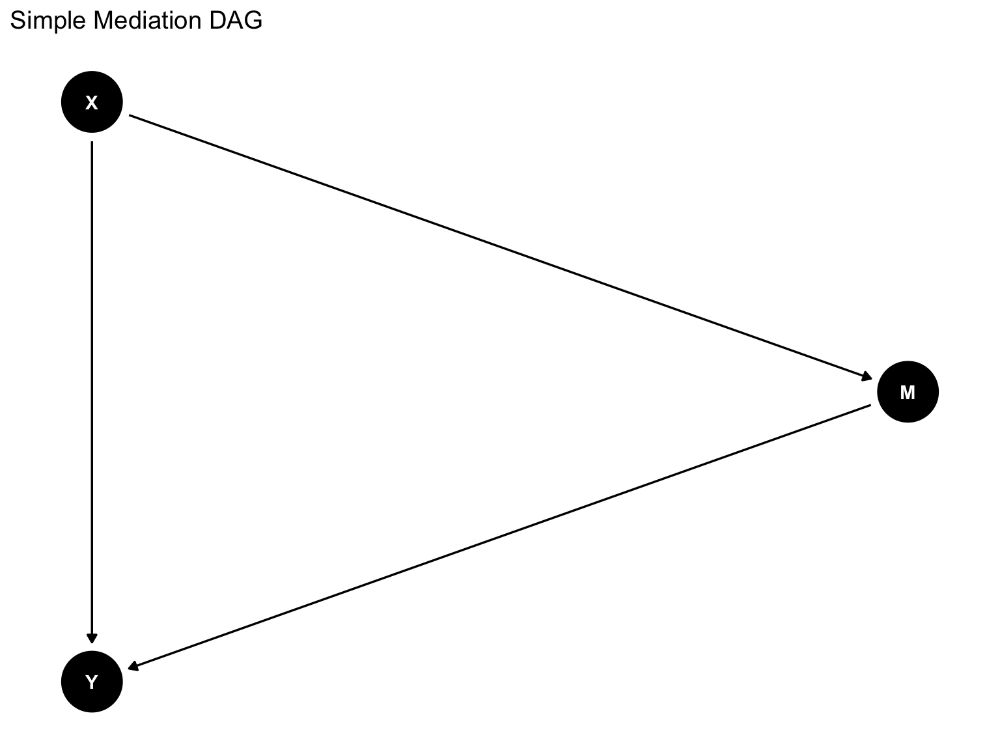
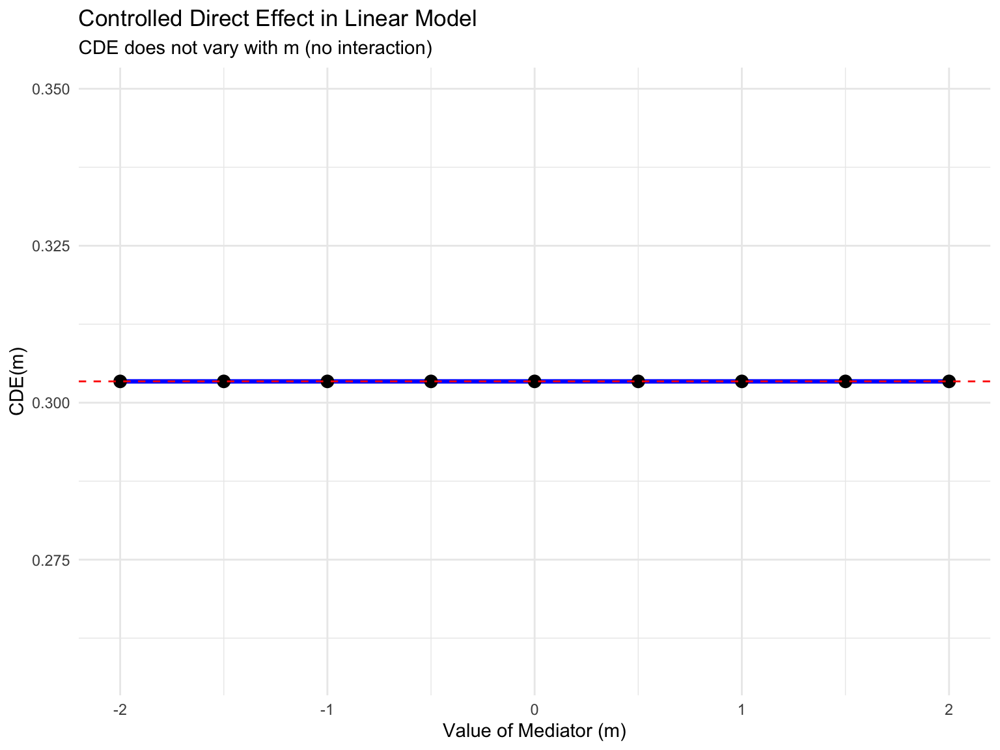
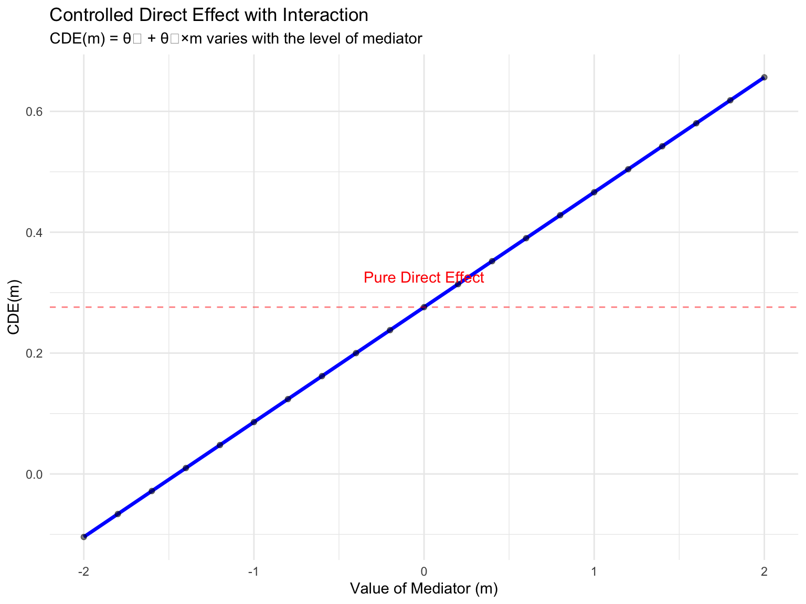
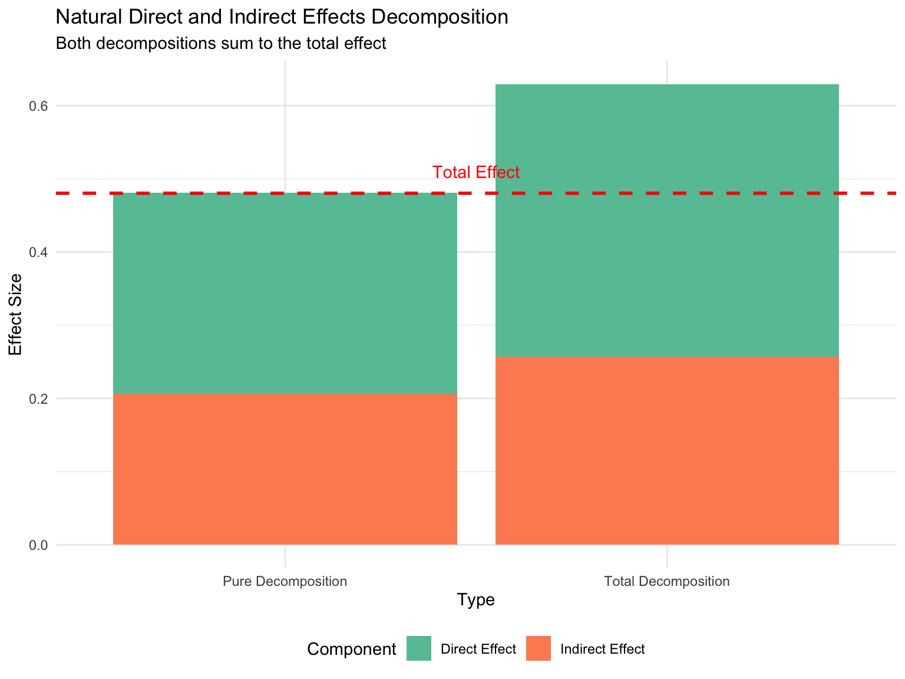
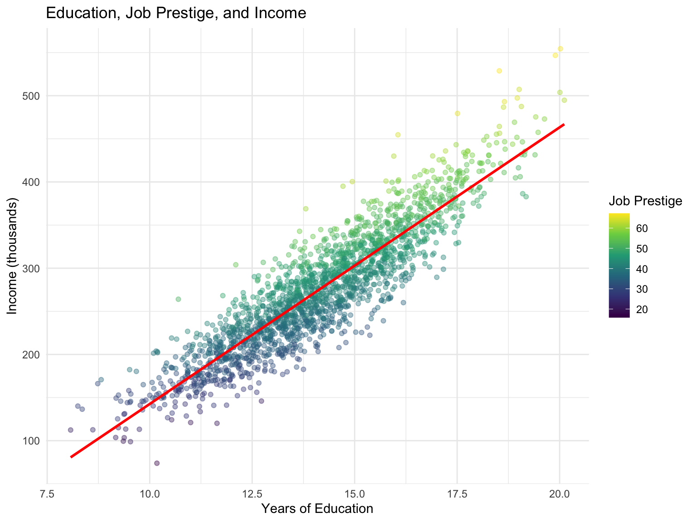
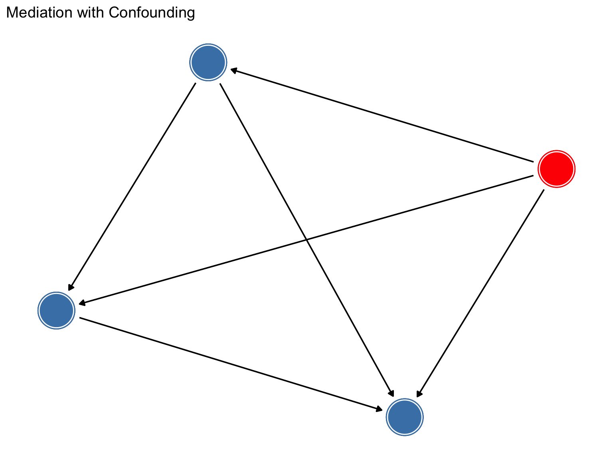

Code
# Load required packages
library(tidyverse)
library(lavaan)
library(dagitty)
library(ggdag)
library(knitr)
library(kableExtra)
# Set seed for reproducibility
set.seed(123)This document demonstrates the key distinctions between:
This version was produced by Claude Sonnet 4.5 with extended thinking. I have scanned the output, which appears to be correct; however, as a tutorial it is missing definitions and explanations. I will be embelleshing it to provide a complete tutorial of these concepts.
Part of the reason for posting this is to demonstrate how to use LLMs to better understand a topic. To assess what Claude produced here and create a useful tutorial, I need to critically review the results and then fill in information that Claude left out. This requires active engagement on my part. Teaching and learning research shows that active engagement with material is one of the most important factors in learning.
# Load required packages
library(tidyverse)
library(lavaan)
library(dagitty)
library(ggdag)
library(knitr)
library(kableExtra)
# Set seed for reproducibility
set.seed(123)In this section, we’ll work with a simple mediation model: X → M → Y with a direct path X → Y
# Create DAG
dag <- dagitty('dag {
X -> M
M -> Y
X -> Y
}')
# Plot the DAG
ggdag(dag, layout = "circle") +
theme_dag() +
ggtitle("Simple Mediation DAG")
n <- 5000
# Generate data according to structural equations
# M = 0.5*X + e_M
# Y = 0.3*X + 0.4*M + e_Y
data_linear <- tibble(
X = rnorm(n, mean = 0, sd = 1),
e_M = rnorm(n, mean = 0, sd = 1),
e_Y = rnorm(n, mean = 0, sd = 1)
) %>%
mutate(
M = 0.5 * X + e_M,
Y = 0.3 * X + 0.4 * M + e_Y
)# Specify the path model
model_linear <- '
# Regressions
M ~ a*X
Y ~ b*M + c_prime*X
# Define indirect and total effects
indirect := a*b
total := c_prime + a*b
direct := c_prime
'
# Fit the model
fit_linear <- sem(model_linear, data = data_linear)
# Display results
summary(fit_linear, standardized = TRUE)lavaan 0.6-19 ended normally after 1 iteration
Estimator ML
Optimization method NLMINB
Number of model parameters 5
Number of observations 5000
Model Test User Model:
Test statistic 0.000
Degrees of freedom 0
Parameter Estimates:
Standard errors Standard
Information Expected
Information saturated (h1) model Structured
Regressions:
Estimate Std.Err z-value P(>|z|) Std.lv Std.all
M ~
X (a) 0.494 0.014 34.644 0.000 0.494 0.440
Y ~
M (b) 0.403 0.014 28.542 0.000 0.403 0.378
X (c_pr) 0.303 0.016 19.143 0.000 0.303 0.254
Variances:
Estimate Std.Err z-value P(>|z|) Std.lv Std.all
.M 1.005 0.020 50.000 0.000 1.005 0.806
.Y 1.002 0.020 50.000 0.000 1.002 0.708
Defined Parameters:
Estimate Std.Err z-value P(>|z|) Std.lv Std.all
indirect 0.199 0.009 22.029 0.000 0.199 0.166
total 0.502 0.015 32.735 0.000 0.502 0.420
direct 0.303 0.016 19.143 0.000 0.303 0.254# Extract parameter estimates
params_linear <- parameterEstimates(fit_linear) %>%
filter(op %in% c("~", ":=")) %>%
select(label, est, se, pvalue) %>%
filter(!is.na(label))
kable(params_linear,
caption = "Path Coefficients and Effects in Linear Model",
digits = 3) %>%
kable_styling(bootstrap_options = c("striped", "hover"))| label | est | se | pvalue |
|---|---|---|---|
| a | 0.494 | 0.014 | 0 |
| b | 0.403 | 0.014 | 0 |
| c_prime | 0.303 | 0.016 | 0 |
| indirect | 0.199 | 0.009 | 0 |
| total | 0.502 | 0.015 | 0 |
| direct | 0.303 | 0.016 | 0 |
Key Point: In the linear model without interaction:
c_prime (X→Y) = Direct Effect = 0.3a (X→M) × path coefficient b (M→Y) = Indirect Effect = 0.5 × 0.4 = 0.2# Calculate effects manually using regression
m1 <- lm(M ~ X, data = data_linear)
m2 <- lm(Y ~ X + M, data = data_linear)
m3 <- lm(Y ~ X, data = data_linear)
results_linear <- tibble(
Effect = c("a (X→M)", "b (M→Y|X)", "c' (Direct Effect)",
"a×b (Indirect Effect)", "c (Total Effect)"),
Estimate = c(
coef(m1)["X"],
coef(m2)["M"],
coef(m2)["X"],
coef(m1)["X"] * coef(m2)["M"],
coef(m3)["X"]
)
)
kable(results_linear,
caption = "Manual Calculation of Effects",
digits = 3) %>%
kable_styling(bootstrap_options = c("striped", "hover"))| Effect | Estimate |
|---|---|
| a (X→M) | 0.494 |
| b (M→Y|X) | 0.403 |
| c' (Direct Effect) | 0.303 |
| a×b (Indirect Effect) | 0.199 |
| c (Total Effect) | 0.502 |
In the linear model, the CDE is the same for all values of M:
# The CDE(m) is the coefficient on X in the model Y ~ X + M
# It doesn't vary with m in a linear model
cde_values <- tibble(
m = seq(-2, 2, by = 0.5),
CDE = coef(m2)["X"] # Same for all values of m
)
ggplot(cde_values, aes(x = m, y = CDE)) +
geom_line(color = "blue", size = 1.2) +
geom_point(size = 3) +
geom_hline(yintercept = coef(m2)["X"], linetype = "dashed", color = "red") +
labs(title = "Controlled Direct Effect in Linear Model",
subtitle = "CDE does not vary with m (no interaction)",
x = "Value of Mediator (m)",
y = "CDE(m)") +
theme_minimal()
# In linear models without interaction:
# NDE = CDE = path coefficient c'
# NIE = a × b
nde_linear <- coef(m2)["X"]
nie_linear <- coef(m1)["X"] * coef(m2)["M"]
total_linear <- nde_linear + nie_linear
cat("Natural Direct Effect (NDE):", round(nde_linear, 3), "\n")Natural Direct Effect (NDE): 0.303 cat("Natural Indirect Effect (NIE):", round(nie_linear, 3), "\n")Natural Indirect Effect (NIE): 0.199 cat("Total Effect:", round(total_linear, 3), "\n")Total Effect: 0.502 cat("Sum of NDE + NIE:", round(nde_linear + nie_linear, 3), "\n")Sum of NDE + NIE: 0.502 Important: In linear models without interaction, CDE = NDE for all values of m.
Now we add an X×M interaction term to create non-linearity:
# Generate data with interaction
# M = 0.5*X + e_M
# Y = 0.3*X + 0.4*M + 0.2*X*M + e_Y
data_interaction <- tibble(
X = rnorm(n, mean = 0, sd = 1),
e_M = rnorm(n, mean = 0, sd = 1),
e_Y = rnorm(n, mean = 0, sd = 1)
) %>%
mutate(
M = 0.5 * X + e_M,
Y = 0.3 * X + 0.4 * M + 0.2 * X * M + e_Y
)# Regression models
m1_int <- lm(M ~ X, data = data_interaction)
m2_int <- lm(Y ~ X * M, data = data_interaction) # Includes interaction
m3_int <- lm(Y ~ X, data = data_interaction)
# Display regression with interaction
summary(m2_int)$coefficients %>%
kable(caption = "Outcome Regression with Interaction",
digits = 3) %>%
kable_styling(bootstrap_options = c("striped", "hover"))| Estimate | Std. Error | t value | Pr(>|t|) | |
|---|---|---|---|---|
| (Intercept) | 0.000 | 0.015 | -0.002 | 0.998 |
| X | 0.276 | 0.016 | 17.560 | 0.000 |
| M | 0.403 | 0.014 | 29.023 | 0.000 |
| X:M | 0.190 | 0.011 | 17.253 | 0.000 |
With interaction, the CDE depends on the level of M:
# Extract coefficients
theta0 <- coef(m2_int)["(Intercept)"]
theta1 <- coef(m2_int)["X"]
theta2 <- coef(m2_int)["M"]
theta3 <- coef(m2_int)["X:M"]
# CDE(m) = theta1 + theta3*m
# This is the effect of changing X by 1 unit when M is held at level m
m_values <- seq(-2, 2, by = 0.2)
cde_interaction <- tibble(
m = m_values,
CDE = theta1 + theta3 * m_values
)
ggplot(cde_interaction, aes(x = m, y = CDE)) +
geom_line(color = "blue", size = 1.2) +
geom_point(alpha = 0.5) +
geom_hline(yintercept = theta1, linetype = "dashed", color = "red",
alpha = 0.5) +
annotate("text", x = 0, y = theta1 + 0.05,
label = "Pure Direct Effect", color = "red") +
labs(title = "Controlled Direct Effect with Interaction",
subtitle = "CDE(m) = θ₁ + θ₃×m varies with the level of mediator",
x = "Value of Mediator (m)",
y = "CDE(m)") +
theme_minimal()
Key Insight: With interaction, there is no single “direct effect” - it depends on where you fix the mediator!
# For binary X going from 0 to 1, with continuous M
# We'll use the formulas from VanderWeele (2015)
# Coefficients from regressions
beta0 <- coef(m1_int)["(Intercept)"]
beta1 <- coef(m1_int)["X"] # a path
# Calculate E[M|X=0]
mean_M_X0 <- beta0
# Pure NDE (holds M at level when X=0)
# NDE_pure = (theta1 + theta3 * E[M|X=0])
nde_pure <- theta1 + theta3 * mean_M_X0
# Total NDE (holds M at level when X=1)
mean_M_X1 <- beta0 + beta1
nde_total <- theta1 + theta3 * mean_M_X1
# Pure NIE (changes M from X=0 to X=1, keeps X at 0)
nie_pure <- (theta2 * beta1) + (theta3 * beta1 * mean_M_X0)
# Total NIE (changes M from X=0 to X=1, keeps X at 1)
nie_total <- (theta2 * beta1) + (theta3 * beta1 * mean_M_X1)
# Total effect
total_effect <- coef(m3_int)["X"]
effects_df <- tibble(
Effect = c("Pure NDE", "Total NDE", "Pure NIE", "Total NIE",
"Pure NDE + Pure NIE", "Total NDE + Total NIE", "Total Effect"),
Value = c(nde_pure, nde_total, nie_pure, nie_total,
nde_pure + nie_pure, nde_total + nie_total, total_effect)
)
kable(effects_df,
caption = "Natural Direct and Indirect Effects with Interaction",
digits = 3) %>%
kable_styling(bootstrap_options = c("striped", "hover"))| Effect | Value |
|---|---|
| Pure NDE | 0.274 |
| Total NDE | 0.372 |
| Pure NIE | 0.207 |
| Total NIE | 0.257 |
| Pure NDE + Pure NIE | 0.481 |
| Total NDE + Total NIE | 0.629 |
| Total Effect | 0.480 |
Key Observations:
# Create a bar chart showing effect decomposition
decomp_data <- tibble(
Type = rep(c("Pure Decomposition", "Total Decomposition"), each = 2),
Component = rep(c("Direct Effect", "Indirect Effect"), 2),
Value = c(nde_pure, nie_pure, nde_total, nie_total)
)
ggplot(decomp_data, aes(x = Type, y = Value, fill = Component)) +
geom_bar(stat = "identity", position = "stack") +
geom_hline(yintercept = total_effect, linetype = "dashed",
color = "red", size = 1) +
annotate("text", x = 1.5, y = total_effect + 0.03,
label = "Total Effect", color = "red") +
scale_fill_brewer(palette = "Set2") +
labs(title = "Natural Direct and Indirect Effects Decomposition",
subtitle = "Both decompositions sum to the total effect",
y = "Effect Size") +
theme_minimal() +
theme(legend.position = "bottom")
comparison <- tibble(
Characteristic = c(
"Path coefficients interpretable as causal effects?",
"CDE varies with level of M?",
"NDE = CDE?",
"Single direct effect value?",
"Indirect effect calculation",
"Effect decomposition"
),
`Linear Model (No Interaction)` = c(
"Yes",
"No - constant across all m",
"Yes, they are equal",
"Yes - one unique value",
"a × b (product of path coefficients)",
"TE = DE + IE (simple sum)"
),
`Model with Interaction` = c(
"No - effects are conditional",
"Yes - CDE(m) = θ₁ + θ₃×m",
"No - they differ",
"No - depends on reference level",
"Requires counterfactual formulas",
"TE = Pure(NDE+NIE) = Total(NDE+NIE)"
)
)
kable(comparison,
caption = "Key Differences: Linear vs. Non-Linear Models") %>%
kable_styling(bootstrap_options = c("striped", "hover", "condensed"),
full_width = TRUE) %>%
column_spec(1, bold = TRUE, width = "15em") %>%
column_spec(2:3, width = "15em")| Characteristic | Linear Model (No Interaction) | Model with Interaction |
|---|---|---|
| Path coefficients interpretable as causal effects? | Yes | No - effects are conditional |
| CDE varies with level of M? | No - constant across all m | Yes - CDE(m) = θ₁ + θ₃×m |
| NDE = CDE? | Yes, they are equal | No - they differ |
| Single direct effect value? | Yes - one unique value | No - depends on reference level |
| Indirect effect calculation | a × b (product of path coefficients) | Requires counterfactual formulas |
| Effect decomposition | TE = DE + IE (simple sum) | TE = Pure(NDE+NIE) = Total(NDE+NIE) |
Let’s create a realistic example: effect of education (X) on income (Y) mediated by job prestige (M).
# Generate realistic data
set.seed(456)
n <- 2000
practical_data <- tibble(
education = rnorm(n, mean = 14, sd = 2), # Years of education
e_prestige = rnorm(n, mean = 0, sd = 5),
e_income = rnorm(n, mean = 0, sd = 8)
) %>%
mutate(
prestige = 3 * education + e_prestige, # Job prestige score
# Income depends on education, prestige, AND their interaction
income = 2 * education + 1.5 * prestige + 0.3 * education * prestige + e_income
)
# Visualize the data
ggplot(practical_data, aes(x = education, y = income, color = prestige)) +
geom_point(alpha = 0.4) +
scale_color_viridis_c() +
geom_smooth(method = "lm", se = FALSE, color = "red") +
labs(title = "Education, Job Prestige, and Income",
x = "Years of Education",
y = "Income (thousands)",
color = "Job Prestige") +
theme_minimal()
# Mediator model
med_model <- lm(prestige ~ education, data = practical_data)
# Outcome model with interaction
out_model <- lm(income ~ education * prestige, data = practical_data)
# Total effect model
tot_model <- lm(income ~ education, data = practical_data)# Extract coefficients
a_coef <- coef(med_model)["education"]
b0_coef <- coef(out_model)["(Intercept)"]
b1_coef <- coef(out_model)["education"]
b2_coef <- coef(out_model)["prestige"]
b3_coef <- coef(out_model)["education:prestige"]
# Mean prestige at different education levels
mean_prestige_low <- predict(med_model,
newdata = data.frame(education = 12))
mean_prestige_high <- predict(med_model,
newdata = data.frame(education = 16))
# CDE at different prestige levels
prestige_levels <- c(30, 40, 50, 60)
cde_values_practical <- sapply(prestige_levels,
function(m) b1_coef + b3_coef * m)
cde_table <- tibble(
`Prestige Level` = prestige_levels,
`CDE (Effect per Year of Education)` = cde_values_practical,
`Interpretation` = case_when(
prestige_levels == 30 ~ "Low prestige job",
prestige_levels == 40 ~ "Medium-low prestige",
prestige_levels == 50 ~ "Medium-high prestige",
prestige_levels == 60 ~ "High prestige job"
)
)
kable(cde_table,
caption = "Controlled Direct Effects at Different Prestige Levels",
digits = 2) %>%
kable_styling(bootstrap_options = c("striped", "hover"))| Prestige Level | CDE (Effect per Year of Education) | Interpretation |
|---|---|---|
| 30 | 11.06 | Low prestige job |
| 40 | 14.01 | Medium-low prestige |
| 50 | 16.96 | Medium-high prestige |
| 60 | 19.90 | High prestige job |
Interpretation: The direct effect of education on income INCREASES as we move to higher prestige jobs. This makes sense - education may be more valuable (in terms of income) in high-prestige positions.
# Calculate natural effects for 1-year increase in education
mean_prestige_base <- predict(med_model,
newdata = data.frame(education = 14))
mean_prestige_increased <- predict(med_model,
newdata = data.frame(education = 15))
# Pure NDE (fixes prestige at baseline education level)
pure_nde <- b1_coef + b3_coef * mean_prestige_base
# Pure NIE (changes prestige due to education, holds education at baseline)
pure_nie <- (b2_coef + b3_coef * 14) * a_coef
# Total effect
total_eff <- coef(tot_model)["education"]
interpretation_table <- tibble(
Effect = c("Pure Natural Direct Effect",
"Pure Natural Indirect Effect",
"Total Effect",
"Sum of Pure NDE + NIE"),
Value = c(pure_nde, pure_nie, total_eff, pure_nde + pure_nie),
`Interpretation` = c(
"Income change from education, not through prestige",
"Income change through increased prestige from education",
"Total income change from 1 more year of education",
"Sum of decomposed effects (should equal total)"
)
)
kable(interpretation_table,
caption = "Natural Effects Decomposition",
digits = 2) %>%
kable_styling(bootstrap_options = c("striped", "hover"))| Effect | Value | Interpretation |
|---|---|---|
| Pure Natural Direct Effect | 14.58 | Income change from education, not through prestige |
| Pure Natural Indirect Effect | 17.21 | Income change through increased prestige from education |
| Total Effect | 32.08 | Total income change from 1 more year of education |
| Sum of Pure NDE + NIE | 31.79 | Sum of decomposed effects (should equal total) |
prop_mediated <- pure_nie / total_eff
cat("Proportion of total effect mediated by prestige:",
round(prop_mediated * 100, 1), "%\n")Proportion of total effect mediated by prestige: 53.7 %# Create a more complex DAG showing confounders
dag_confounded <- dagitty('dag {
X -> M
M -> Y
X -> Y
C -> X
C -> Y
C -> M
}')
tidy_dag <- tidy_dagitty(dag_confounded)
ggdag(tidy_dag) +
theme_dag() +
ggtitle("Mediation with Confounding") +
geom_dag_text(color = "white") +
geom_dag_edges() +
geom_dag_node(aes(color = name == "C")) +
scale_color_manual(values = c("TRUE" = "red", "FALSE" = "steelblue"),
guide = "none")
Key Assumptions for Natural Direct/Indirect Effects:
The fourth assumption is often violated in practice - this is why controlled direct effects are sometimes preferred (they only need assumptions 1-3).
sessionInfo()R version 4.5.1 (2025-06-13)
Platform: aarch64-apple-darwin20
Running under: macOS Sequoia 15.6.1
Matrix products: default
BLAS: /Library/Frameworks/R.framework/Versions/4.5-arm64/Resources/lib/libRblas.0.dylib
LAPACK: /Library/Frameworks/R.framework/Versions/4.5-arm64/Resources/lib/libRlapack.dylib; LAPACK version 3.12.1
locale:
[1] en_US.UTF-8/en_US.UTF-8/en_US.UTF-8/C/en_US.UTF-8/en_US.UTF-8
time zone: America/Chicago
tzcode source: internal
attached base packages:
[1] stats graphics grDevices utils datasets methods base
other attached packages:
[1] kableExtra_1.4.0 knitr_1.50 ggdag_0.2.13 dagitty_0.3-4
[5] lavaan_0.6-19 lubridate_1.9.4 forcats_1.0.0 stringr_1.5.2
[9] dplyr_1.1.4 purrr_1.1.0 readr_2.1.5 tidyr_1.3.1
[13] tibble_3.3.0 ggplot2_4.0.0 tidyverse_2.0.0
loaded via a namespace (and not attached):
[1] gtable_0.3.6 xfun_0.53 htmlwidgets_1.6.4 ggrepel_0.9.6
[5] lattice_0.22-7 tzdb_0.5.0 quadprog_1.5-8 vctrs_0.6.5
[9] tools_4.5.1 generics_0.1.4 parallel_4.5.1 stats4_4.5.1
[13] curl_7.0.0 pkgconfig_2.0.3 Matrix_1.7-3 RColorBrewer_1.1-3
[17] S7_0.2.0 lifecycle_1.0.4 compiler_4.5.1 farver_2.1.2
[21] textshaping_1.0.3 mnormt_2.1.1 ggforce_0.5.0 graphlayouts_1.2.2
[25] htmltools_0.5.8.1 yaml_2.3.10 pillar_1.11.0 MASS_7.3-65
[29] cachem_1.1.0 viridis_0.6.5 boot_1.3-31 nlme_3.1-168
[33] tidyselect_1.2.1 digest_0.6.37 stringi_1.8.7 splines_4.5.1
[37] labeling_0.4.3 polyclip_1.10-7 fastmap_1.2.0 grid_4.5.1
[41] cli_3.6.5 magrittr_2.0.4 ggraph_2.2.2 tidygraph_1.3.1
[45] pbivnorm_0.6.0 withr_3.0.2 scales_1.4.0 timechange_0.3.0
[49] rmarkdown_2.29 igraph_2.1.4 gridExtra_2.3 hms_1.1.3
[53] memoise_2.0.1 evaluate_1.0.5 V8_7.0.0 viridisLite_0.4.2
[57] mgcv_1.9-3 rlang_1.1.6 Rcpp_1.1.0 glue_1.8.0
[61] tweenr_2.0.3 xml2_1.4.0 svglite_2.2.1 rstudioapi_0.17.1
[65] jsonlite_2.0.0 R6_2.6.1 systemfonts_1.2.3